MINDli
Trivia, logic puzzles and mini-games. Pick a question or change the way you play.
Leave an honest reviewReleased games and fresh discoveries: trivia, puzzles, quick reflexes and strategy.
Find your gameTrivia, logic puzzles and mini-games. Pick a question or change the way you play.
Leave an honest review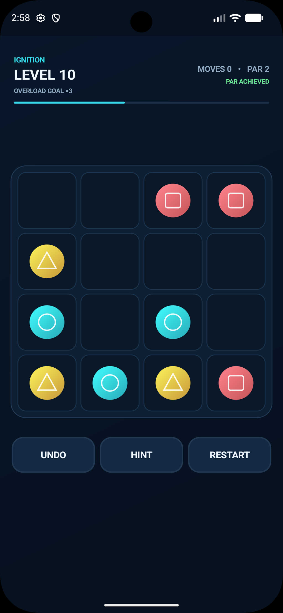
Shift rows and columns. Plan your move and watch the chain reaction.
Leave an honest reviewMahjong solitaire with matching tiles. Look for your next available pair.
Leave an honest review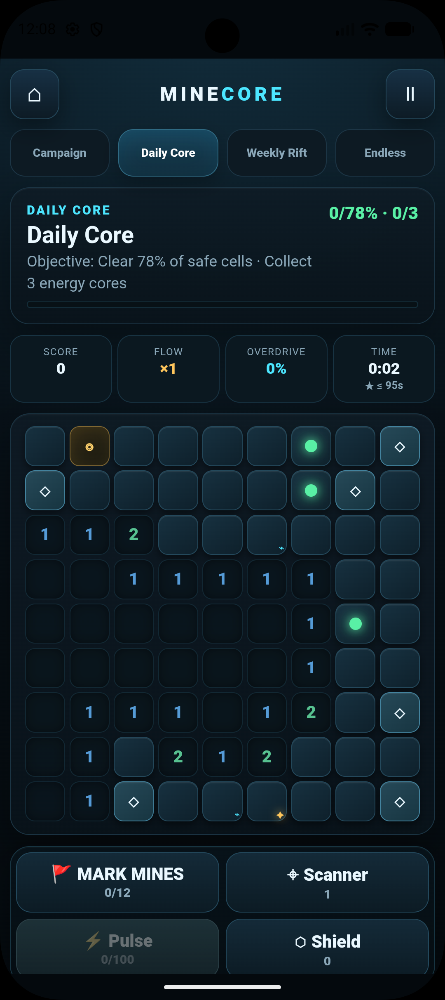
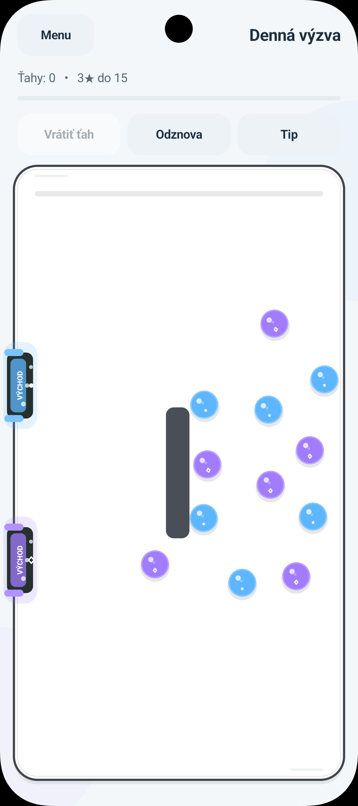
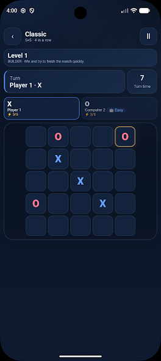
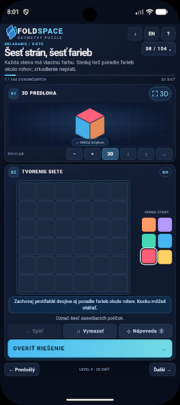
A geometry puzzle. Explore the board and think through your next move.
Leave an honest review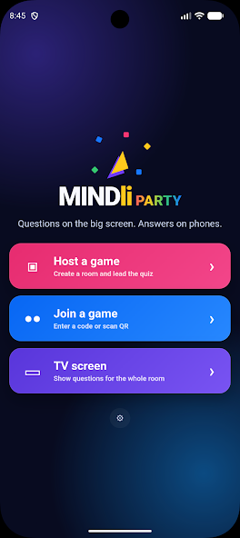
A party quiz for shared play. Bring your curiosity and challenge your friends.
Leave an honest review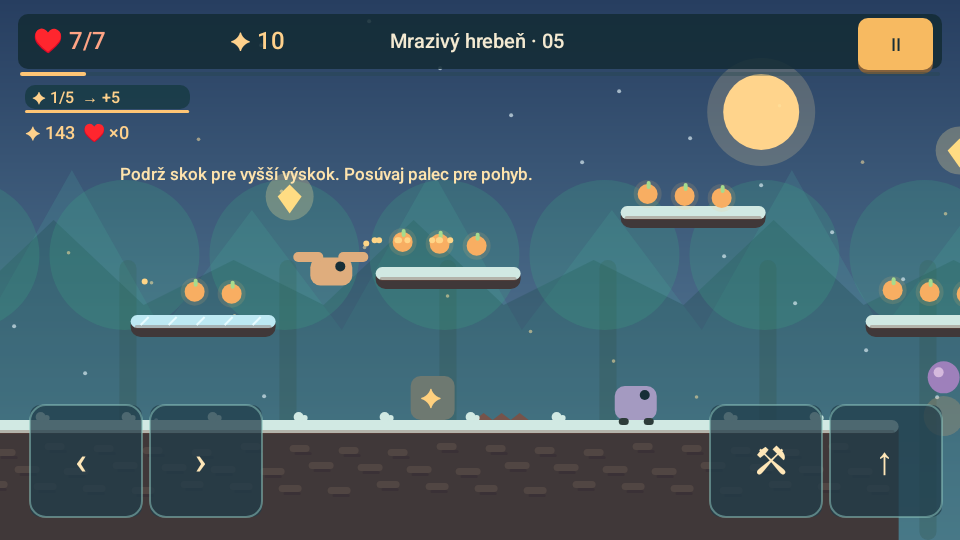
A prehistoric platform adventure with secret rooms and carefully timed jumps.
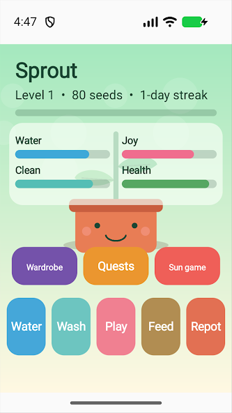
Care for your own little plant: water, feed, dress up and play.
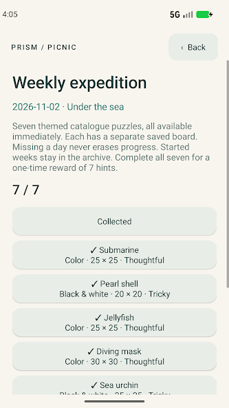
Turn number clues into colorful pixel pictures.
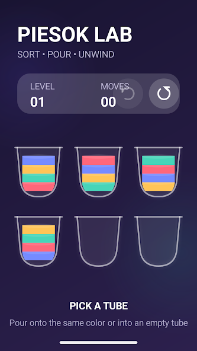
Pour and sort colorful sand in a relaxing glass laboratory.
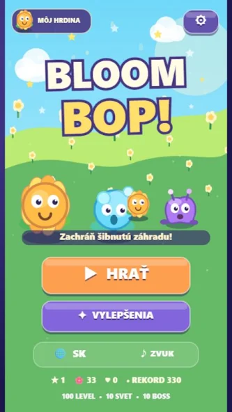
Place plant helpers and defend your garden against waves of monsters.
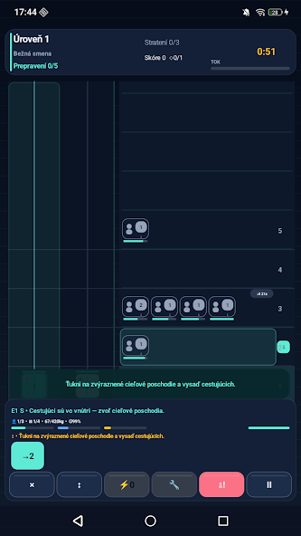
Dispatch elevators, pick up passengers and plan their stops.
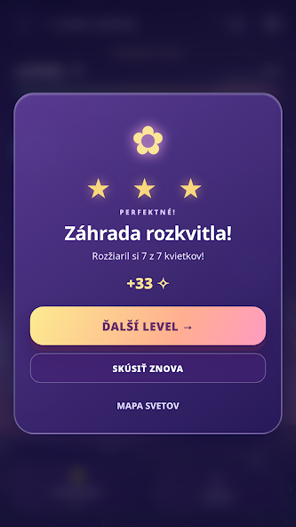
Choose flowers and trigger a colorful chain of light.
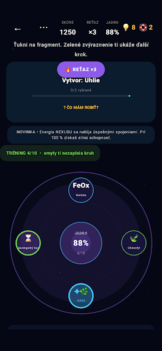
Connect fragments, discover relationships and build knowledge chains.
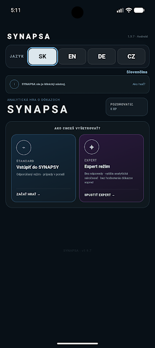
Investigate cases, weigh evidence and question your assumptions.
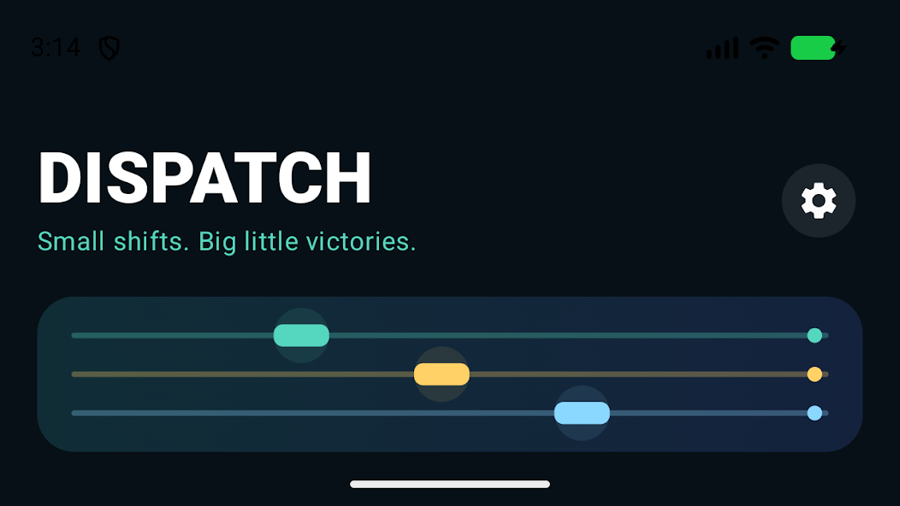
Route trains and flights. Plan safe paths through busy traffic.
Closed tests require an eligible Google account. These games are not yet publicly released.
Pick a game. Open its store page. Tap Install.
Official app screenshots and artwork. Appearance may vary by version and platform. Tap an image to open it.
Website language only. In-game languages, availability and device support vary. Store pages show the current details.
Android links appear first. iPhone links are shown only for the two confirmed released iOS games.
Tell us the game, your device and what happened. Please do not send passwords or payment details.